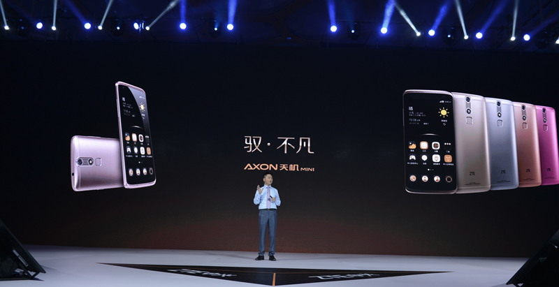

封号计时器？微信公众平台“违规记录”功能上线
2017/09/12 12:30:50

如今一条已经完成了几轮融资，融资的金额达千万美金。而融资后一条的估计也达到了1亿美金，一个600万粉丝的微信公众号估计一亿美金这是什么概念？很多人可能不会相信。但是从营收来看你似乎会觉得合理一些，每月约3000万的收入。一条的核心价值观是要更多是做作品，似乎要推动中国生活美学的升级，而不是我们聚焦于营销，或者变现。其实说什么都是假，一条其实还是一个广告主。只是使用一种新的广告形式去变现，这个也是一条的价值所在。之所以有怎么多的广告主找上门其实就是因为口碑，100万一个广告并不是很多人能消费起。并且大部分的广告主都是一些实体的商家，比如一些做茶庄，做工艺，做品牌的商家。至于效果如何我们也不清楚，但是做这种广告更多的都是宣传品牌，因为商家都是全国各地的，实在真正能通过视频广告吸收到店的人估计不会很多。那么为什么收费怎么贵还怎么多的商家会找一条去推广呢？原因我认为除了一条的视频做得好，口碑好之外更多的是因为移动端的广告资源少。加上徐沪生以前一直在做传媒，传统的杂志也做过、所以在广告客户上面会有一定的累积。
据统计2014年，电视媒体整体广告投放达到1.32万亿（刊例价），就算打个5折，也有差不多6000多亿。原则上，这些份额将来都属于互联网、移动互联网，市场巨大，但是却几乎没有一个高端一点的渠道，更不要说能够打通高端媒体与高端消费的平台了，这方面，视频将会是最强势的媒体形式。所以一条就是看中这个市场，结合人气最好用户最多微信做传播渠道。
说真的刚刚开始就拿几百万去砸一个公众号不是谁都有这胆量的，更有胆量的是一轮轮的融资者，并且微信公众号将来会怎样谁也不知道。徐沪生说道他们早就开发好有自己的APP了，但是一直没有上，不想上。并且他们的社群为0，不做社群，就做内容。很多我们无法理解的运营方式，在一条上面我们看到了。拥有几百万的粉丝却不做社群，拥有几百万的粉丝和极好的口碑却不做自己的平台。
目前消费一条内容的群体大部分都是草根，因为只有草根才有时间去消费内容。按照一条的内容来判断应该女性群体会比较多一点，但是一条并没有做电商的打算。视乎更多的想去做优质的内容，其实按照目前一条的粉丝群体和口碑做电商平台是最合适的，也是最容易获利和做大的方向。似乎我们都看不懂一条的下一步，徐沪生说道如果被你们看懂了一条的下一步他们是很危险的。
其实一条的成功就是因为专注，极致，快。所以各位创业者，不要想太多，看好市场，把控好方向把一个东西做到极致，做出价值你才能脱颖而出。还有一点就是要快，看准了就赶快做，在别人还没有看透你之前做起来。想法太多太聪明有时候并不是一件好事，我们很多的创业者，包括我自己也是因为想法太多。所以会分散很的精力去做一些无谓的事情，到头来发现我们连自己最初的想法都不见了。所以我目前也砍了很多项目，后期会专心做互传电商网和互传电商报APP，以提供优质内容为核心，没有太多的功能就做内容，把内容做到极致就好。其他的项目让其他人负责就好了，管太多，做太多我也发现真的会很难做大，这上半年发现自己还在原点。